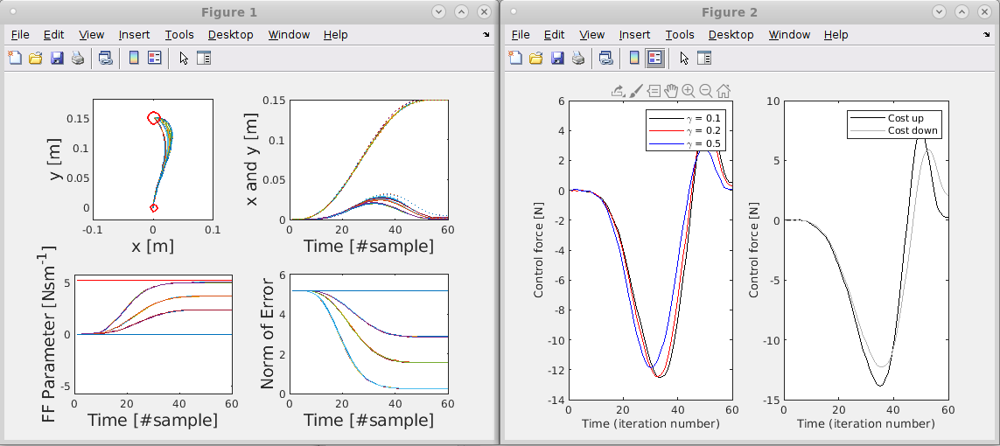
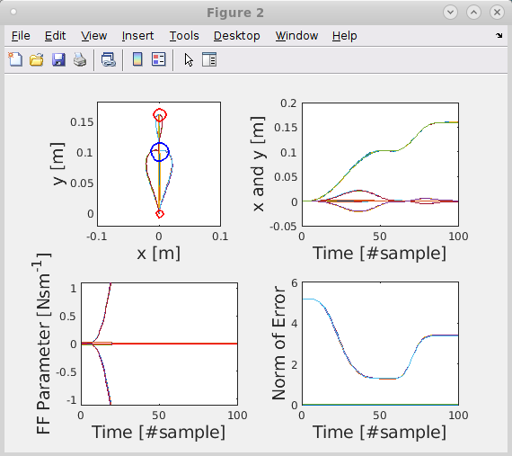

This is the readme for the models associated with the paper:
Crevecoeur F, Thonnard JL, Lefèvre P (2020) A very fast time scale of human motor adaptation: within movement adjustments of internal representations during reaching eNeuro
This model was contributed by F Crevecoeur.
Usage:
------
To start type the names of the following scripts on the matlab command prompt
script_adaptiveControl_exp1.m
script_adaptiveControl_exp2.m
which respectively produce the following figures:

